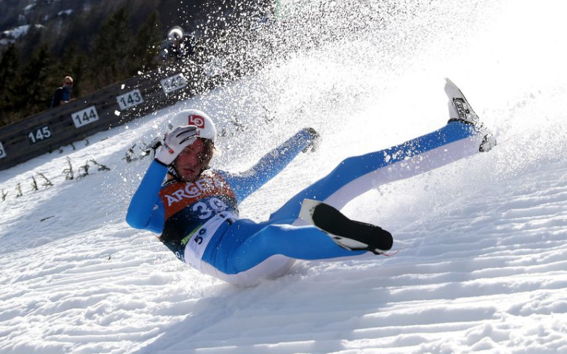

W czasie serii próbnej przed czwartkowym konkursem Pucharu Świata w Planicy doszło do koszmarnego
upadku Norwega Daniela Andre Tandego!
Na 10 zawodników przed końcem serii próbnej Daniel Andre Tande zaliczył koszmarny wypadek. Tuż po wyjściu z progu Norweg stracił panowanie nad nartami, a powietrze porwało mu lewą deskę. Skoczek natychmiast napiął całe ciało i przycisnął do siebie ręce by chronić ograny wewnętrzne. Już wtedy wiedział, że skok zakończy się fatalnie.
CZYTAJ WIĘCEJ
Na 10 zawodników przed końcem serii próbnej Daniel Andre Tande zaliczył koszmarny wypadek. Tuż po wyjściu z progu Norweg stracił panowanie nad nartami, a powietrze porwało mu lewą deskę. Skoczek natychmiast napiął całe ciało i przycisnął do siebie ręce by chronić ograny wewnętrzne. Już wtedy wiedział, że skok zakończy się fatalnie.
CZYTAJ WIĘCEJ